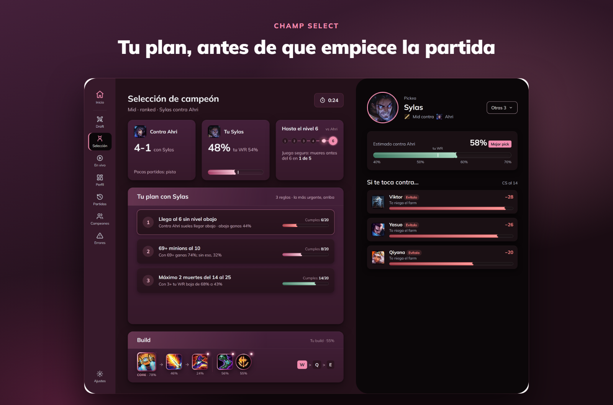
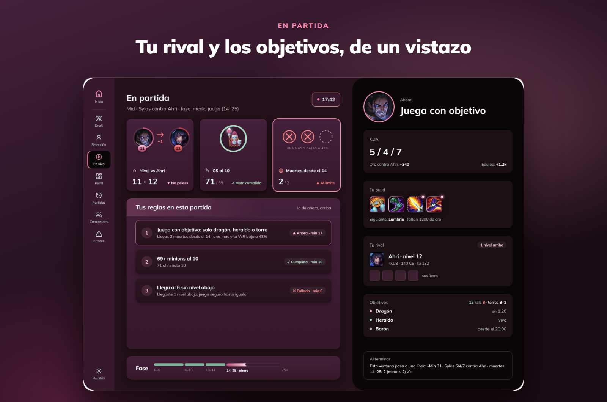
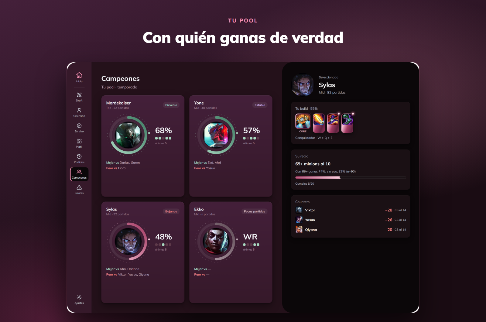

Qué es Racha
Las guías te dicen cómo juega un Challenger. Racha te dice qué te hace perder a ti, y te lo recuerda justo cuando importa.
Hecho con tus partidas
Nada de «farmea más». Racha descubre, por ejemplo, que con 2 muertes o menos del minuto 14 al 25 ganas el 68 %, y con 3 o más, el 43 %.
Aparece sola
Se abre cuando abres LoL y cambia de pantalla según la fase: champ select, partida y final. Cero clics.
Juego limpio
Solo lee lo que el cliente ofrece a las apps. No juega por ti, no toca el juego y no da ventajas injustas.
Tus datos son tuyos
Tus partidas viven en tu computadora. La cuenta en la nube es opcional y la borras con un botón.
Qué ves en cada momento



Preguntas frecuentes
¿Me pueden banear por usarla?
Racha solo lee la información que el propio cliente de LoL ofrece a las apps, la misma que ya ves en tu pantalla. No pickea, no banea, no acepta partidas y no modifica el juego.
¿Cuánto cuesta?
Es gratis y de código abierto.
¿Funciona en mi servidor?
Sí: LAN, LAS, NA, EUW, KR y el resto de servidores de Riot.
Windows dice «Windows protegió su PC». ¿Es seguro?
Pasa con las apps nuevas que todavía no tienen firma digital. Dale a Más información → Ejecutar de todas formas. El código está publicado, a la vista de todos.